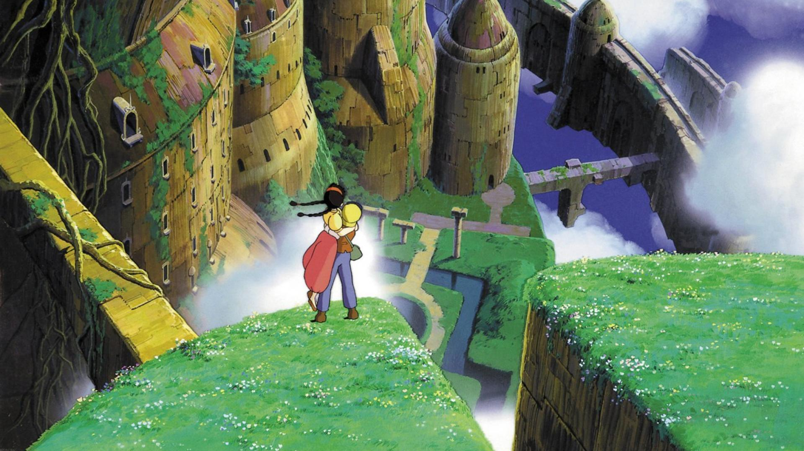
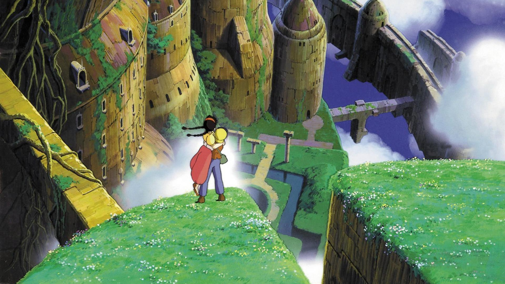

吉卜力动画介绍
- 吉卜力工作室是一家位於日本東京都小金井市的动画工作室，為日本動畫協會成員之一。
- 動畫導演宮崎駿、高畑勳，德間書店的編輯鈴木敏夫及社長德間康快等人所創辦
- 所推出的動畫電影作品是以高品質、細膩著稱，在全球最高日本動畫電影票房前十名當中，吉卜力的作品便包辦其中六項。
- 2001年推出的《神隱少女》不僅是日本首部奪下奧斯卡最佳動畫片獎的動畫
- 宫崎骏
- 宮﨑 駿／みやざき はやお Miyazaki Hayao
- 1941年1月5日－
- 日本动画师、动画导演、及漫画家。
- 大学毕业后踏入动画制作工作，日后成为日本知名动画厂吉卜力工作室的核心人物之一。
- 头衔：其执导过11部长篇动画电影，现任吉卜力工作室董事、德间纪念动画文化财团理事长、三鹰市立动画美术馆馆长。目前居住于埼玉县所泽市。
- 创作风格：宫崎骏的作品受到一些西方作家的影响，包括娥苏拉·勒瑰恩、路易斯·卡罗和戴安娜·韦恩·琼斯。在宫崎骏的电影中，呈现出这些作家所创造的自给自足世界，并通常隐含着寓言性质，并具有复杂的角色。宫崎峻其他的作品，例如《龙猫》、《幽灵公主》与《千与千寻》，都包括日本的历史及神话元素
- 荣誉及评价：美国《时代杂志》在2003年4月10日发表“亚洲英雄二十人”，宫崎骏与著名棒球运动员松井秀喜是唯二上榜的日本人。
- 荣誉与评价：宫崎骏在英国《卫报》选出的当代40大杰出导演中名列第8位，而美国电影评论家罗杰·艾伯特则认为宫崎骏是世界上最杰出的动画导演。日本作家上岛春彦认为宫崎骏是一位伟大的动画师，并认为没有任何一位日本导演对于世界电影造成的影响比宫崎骏更大。
二、知名电影
故事背景设定于1958年（昭和33年），一位大学教授“草壁达郎”（草壁タツオ）和他的两个女儿“五月、 梅伊”（サツキ、メイ）搬进一个森林附近的一所旧房子，而教授的妻子“草壁靖子”因染上了结核病，在附近的一所医院养病中。搬来新家的五月和梅伊， 都在家中及附近发现各种奇妙的东西，如家里藏着像是小黑球模样的“煤黑子”（ススワタリ）。而梅伊某一天也在外头发现可以将外表变不见的“小龙猫”（チビトト）、 为了追赶它而被引领到树洞里发现森林的守护者“大龙猫”（トトロ）；并且在一个下雨的晚上，当五月和梅伊在公车站牌边等爸爸时，她们都遇到了用树叶挡雨、先前梅伊在树洞里看到的大龙猫， 不久“猫巴士”（ネコバス）来到，大龙猫给予五月一包种子后登上猫巴士离去。之后有一天从医院得知妈妈的病情恶化，梅伊想把一个成熟的玉米带给妈妈时、不小心迷了路， 当众人都遍寻不着后，五月跑去找大龙猫帮忙。之后大龙猫召唤了猫巴士，在猫巴士的帮助下，梅伊被迅速找到了，并且接送五月和梅伊穿过乡间， 到医院探望她们的妈妈，最后草壁达郎在医院中得知她们的妈妈病情好转，不久就可以出院。
 

《天空之城》（日语：天空の城ラピュタ）是一部由吉卜力工作室制作，宫崎骏执导，于1986年8月2日首映的日本动画电影，作品的原作、导演、 剧本和角色设定皆由宫崎骏来担任。此作也是1985年成立的吉卜力工作室首次公开的剧院作品，由东映发行。
《天空之城》的故事背景约设定在十九世纪后期的蒸气朋克虚构世界
讲述一位技工学徒的少年和一位持有一块强大神秘矿石的少女相遇，且从政府军队、神秘特务和一些海盗群中寻找传说中的天空之城“拉普达”的冒险故事。这部电影在1986年获得Animage动漫大奖并得到积极的评价， 票房收入超过1600万美元。
截至2021年《天空之城》在票房、家庭影像和配乐方面的总收入约1.57 亿美元。在关于最佳动画电影列表的日本民意调查中， 《天空之城》在2006年文化厅媒体艺术祭上被评为第二佳动画电影，并在2008年Oricon观众投票中被评为第一名。《天空之城》对日本流行文化的影响相当广大， 且影响日本国内与海外大量的动画及漫画系列作品。在当代也被誉为是蒸汽朋克和柴油朋克流派中最具有影响力的代表作品。
《神隱少女》 （日语：千と千尋の神隠し）是一部由吉卜力工作室製作、宫崎骏擔任導演和劇本，於2001年7月20日上映的日本動畫電影,其配音演員包括柊瑠美、 入野自由、夏木麻里、中村彰男、玉井夕海、神木隆之介、内藤剛志和澤口靖子等人。
內容講述一個10歲的小女孩荻野千尋與其家人誤闖了神靈世界，之後經歷成長，並不斷尋找方法來令自己和父母返回人類世界的故事。 奖项方面，《千与千寻》于2002年获得第52届柏林电影节金熊奖，第75届奥斯卡金像奖最佳动画片等十多项以上日本国内外电影大奖。
多数媒体也对此影片给予正面回应，如《纽约时报》评比为21世纪最佳前25部电影的第2名， 《Time Out》杂志将此列在史上前15大动画电影的首位等等。在2016年由英国BBC赞助的一项民意调查中，来自世界各地的177名评论家将其评为“21世纪100部最伟大的电影”中的第四名。

某天，年仅10岁的少女荻野千寻跟着父母坐在车上准备前往要搬入的新家。在路途当中千寻的父亲因开错方向来到一条有着隧道入口的小径。千寻的父母在一时好奇心下带着她前往隧道里头一探究竟。 通过隧道的千寻见到眼前另一端是个看不到任何人的小镇。当千寻的父母来到小镇里发现到有间摆满食物的无人餐馆，便于未经允许的情况下随意享用里头的餐点。
由于千寻不想跟父母一同乱拿食物，于是索性在小镇里四处闲晃，途中在一座桥对面看到一栋像是旅店的建筑。该建筑实际上是由一位名为“汤外婆”的魔女所经营，提供各方神明泡澡歇憩，名叫“油屋”的澡堂。 当千寻走到桥上时，遇到一位名叫“白龙”的神秘少年，向她警告这里不是她应该进入的地方，就在此时城镇里各处突然冒出像是鬼魅般的形体。被眼前情况受到惊吓的千寻，跑向父母所待的餐馆要他们赶紧一同离开， 但汤外婆对千寻父母随意享用食物的行为感到愤怒于是施法将两人变成猪作为惩罚。
千寻发现父母变成猪而再度受到惊吓开始漫无目的地乱跑。就在千寻不知该如何是好时，之前桥上的白龙出现在她面前表示着他愿意协助千寻渡过危机。白龙暗中将千寻带到油屋并向她解释若要在这个世界存活下来， 唯一方法是要向汤外婆获得在油屋工作的资格。之后千寻面临必须在油屋里接触不同形形色色人物、以及各种困难和危机，而她原先娇纵的心理也随着历程开始展开不同变化。为了帮助因为窃取汤外婆的孪生姐姐钱外婆的魔女印章、 被钱外婆给惩戒的白龙，她独自到钱外婆那里送回魔女印章并在白龙接她回去的路上想起来白龙的名字帮他找到回现实世界的方法。最后她通过汤外婆的考验和父母一起回到原来的世界。